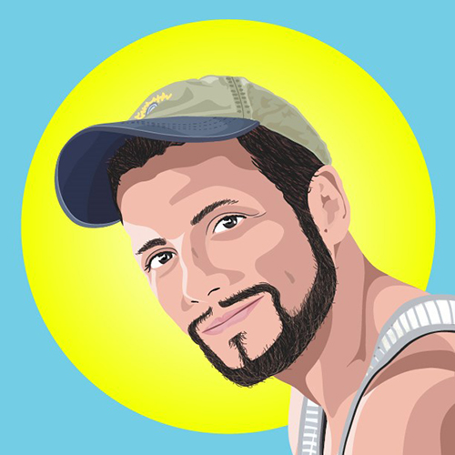

My name is Lucas Araujo, I'm from Brazil and I love languages, traveling, art, nature, meeting new people and learning different things. I have recently graduated with honors in Graphic Design for Print and Web at Humber College and I also hold a Bachelor's Degree in Computer Science, a certificate in Photography and a Postgraduate Degree in Translation. I am really excited for the Web Design and Development program this year, specially to learn the new industry trends and elevate my skills.
For my BSc in Computer Science, my final project was about Linked Data and Open Government Data related to Brazilian politicians. I was invited for interviews to talk about my project back in Brazil and received an invitation to be a Research Visitor at the Free University of Berlin, in Germany.

Experiences
- I have worked at the Walt Disney World Resort in 3 different programs: International College Program, Super Greeter Program and Guest Relations Program.
- During my graduation I participated on an Academic Exchange at the University of Salamanca, in Spain.
- I had the opportunity to work as a Photographer for Celebrity Cruises and visit many countries around the world.
Work
- I love to use my skills and my creativity to bring my ideas to life and communicate the message clearly.
- I also love the fact that we can combine web design and development with other fields to solve problems and drive innovation.
- I like to combine both my creative and technical side in order to create effective and engaging solutions focused on user experience.
Fun facts
- I can speak 6 different languages: Portuguese, English, Spanish, French, Italian and German. I can play the snare drum and I used to perform in Rio Carnival.
- I love animals, plants, waterfalls, hiking and everything related to nature. I love butterflies and flowers because of their different shapes and colors.
- My favorite things are Friends, Star Wars, Harry Potter and RuPaul's Drag Race, and I have decorated my apartment in Brazil inspired in those themes.